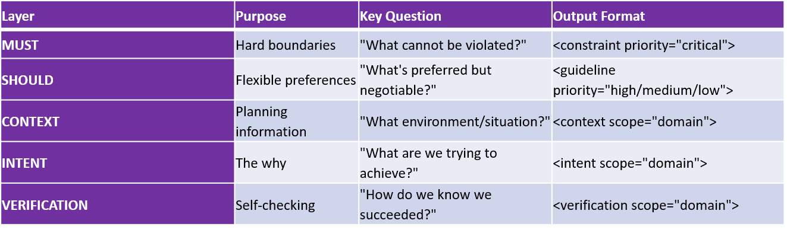

Appendix C: Quick Reference Guide¶
For: Fast reference during specification writing
When to use: While actively writing specs, need quick reminders
What you get: Checklists, patterns, red flags, decision trees- all condensed
How to Use This Guide¶
This is your quick reference card:
- Keep it open while writing specs
- Check relevant sections as you work
- Use checklists before finalizing
- Reference patterns when stuck
Not meant for learning (see Sections 1-7 for that). Meant for doing (quick lookups while working).
The Five Layers at a Glance¶

MUST Layer Quick Reference¶
When to Use MUST Use MUST for:
- Legal requirements (HIPAA, PCI-DSS, GDPR)
- Security boundaries (encryption, authentication)
- Performance hard limits (<200ms or system fails)
- Data integrity rules (no data loss, corruption prevention)
- Compatibility requirements (must work on iOS 15+)
Don't use MUST for
- Preferences (styling, naming conventions)
- Optimization goals (would like faster, but not critical)
- Nice-to-haves (features that would be good to add)
- Subjective qualities ("good", "clean", "elegant")
MUST Checklist¶
Before finalizing MUST constraints:
[ ] Is this truly non-negotiable? (Can we launch without it? If yes → SHOULD)
[ ] Is this specific? (Not "secure" but "bcrypt with salt rounds ≥12")
[ ] Is this measurable? (Can the model verify objectively?)
[ ] Is this actionable? (Does the model know what to do?)
[ ] Does this have a supremacy clause if needed? (When conflicts occur, what wins?)
[ ] Is verification protocol defined? (How to check compliance?)
MUST Patterns¶
Pattern 1: Security Constraint¶
<constraint priority="critical" scope="security">
MUST: [Specific security requirement]
MUST: [Authentication/authorization requirement]
MUST: [Data protection requirement]
RATIONALE: [Why this is required - legal, risk, etc.]
VERIFICATION:
[Specific test or audit to confirm compliance]
</constraint>
Pattern 2: Performance Constraint¶
<constraint priority="critical" scope="performance">
MUST: [Specific metric] <[threshold] ([percentile])
Example: API response time <200ms (p95)
VERIFICATION:
Command: [load test command]
Expected: [specific result]
Pass criteria: [objective threshold]
</constraint>
Pattern 3: Compatibility Constraint¶
<constraint priority="critical" scope="compatibility">
MUST: Support [platform/version] and above
MUST: Work with [existing system/tool]
RATIONALE:
[User base breakdown, integration needs]
VERIFICATION:
Test matrix: [specific versions/platforms to test]
</constraint>
MUST Red Flags¶
Warning signs your MUST is problematic:
Vague language¶
"Be secure", "Perform well", "Look good"
Fix: Define specifically (e.g., "bcrypt salt rounds ≥12", "p95 <200ms", "WCAG 2.1 AA")
Subjective criteria:¶
"Clean code", "Good UX", "Elegant"
Fix: Define objectively (e.g., "Complexity <10", "80% task completion", "Pass Nielsen heuristics")
Too many MUSTs:¶
50+ critical constraints
Fix: Prioritize- some are SHOULD not MUST. Keep MUSTs to truly critical items.
Conflicting MUSTs:¶
Response <100ms BUT query 10 databases (impossible!)
Fix: Prioritize (which wins?) or relax one constraint to make both achievable.
Secret MUST disguised as SHOULD:¶
"SHOULD use company auth (but really you must!)"
Fix: Call it MUST if it's required. Be honest about rigidity.
SHOULD Layer Quick Reference¶
When to Use SHOULD**¶
Use SHOULD for:
- Preferred approaches (but alternatives acceptable)
- Optimization goals (faster is better, but not critical)
- Style preferences (naming, formatting, conventions)
- Nice-to-have features (improve UX, not required)
- Best practices (recommended but context-dependent)
Don't use SHOULD for¶
- Legal requirements (those are MUST!)
- Hard performance limits (those are MUST!)
- Security requirements (those are MUST!)
- Anything non-negotiable (call it MUST!)
SHOULD Checklist¶
Before finalizing SHOULD guidelines:
[ ] Is there flexibility? (Can alternatives work?)
[ ] Are exceptions acceptable? (When would we violate this?)
[ ] Is the preference justified? (Why is this preferred?)
[ ] Are alternatives documented? (What else could work?)
[ ] Is there a decision framework? (When to choose A vs B?)
SHOULD Patterns¶
Pattern 1: Preferred Approach with Alternatives¶
<guideline priority="high">
SHOULD: [Preferred approach]
RATIONALE: [Why this is preferred]
ACCEPTABLE ALTERNATIVES:
- [Alternative 1] if [condition]
- [Alternative 2] if [condition]
WHEN VIOLATING:
Document rationale and get [stakeholder] approval
</guideline>
Pattern 2: Optimization Goal¶
<guideline priority="medium">
SHOULD: [Optimization target]
Example: Aim for <100ms response time (p95)
RATIONALE: [Why this improves experience]
ACCEPTABLE: <200ms if [trade-off justifies it]
NOT ACCEPTABLE: >500ms (becomes MUST violation)
</guideline>
SHOULD Red Flags¶
Actually required:¶
"SHOULD comply with HIPAA (but it's required)"
Fix: Make it MUST if it's truly required
No flexibility:¶
"SHOULD use React (no alternatives allowed)"
Fix: If no alternatives, it's MUST not SHOULD
Too rigid:¶
"SHOULD be exactly 25 lines (no exceptions)"
Fix: Add acceptable exceptions or make it a range
No rationale:¶
"SHOULD prefer PostgreSQL (no explanation)"
Fix: Explain WHY preferred (team expertise? specific features?)
CONTEXT Layer Quick Reference¶
What to Include in CONTEXT
Business Context:
- Company stage (startup vs enterprise)
- Budget constraints
- Timeline pressures
- Competitive landscape
- Success metrics
Technical Context:
- Technology stack
- Team expertise
- Infrastructure constraints
- Existing systems
- Scale requirements
User Context:
- Who are the users?
- Tech proficiency
- Device/platform usage
- Pain points
- Success criteria
CONTEXT Checklist¶
Before finalizing CONTEXT:
[ ] Does this explain WHY constraints exist?
[ ] Does this inform priorities?
[ ] Is this specific to THIS project? (Not copy-pasted)
[ ] Does this help with trade-off decisions?
[ ] Is this current and accurate?
CONTEXT Red Flags¶
Generic:¶
"We're a technology company focused on innovation"
Fix: Be specific (stage, size, market, constraints)
Copy-pasted:¶
Context from different project/domain
Fix: Customize to YOUR project
Too much history:¶
5 pages of company background from 2010
Fix: Focus on what's relevant NOW for THIS project
Irrelevant details:¶
"Office has standing desks, free snacks"
Fix: Include only context that affects technical decisions
INTENT Layer Quick Reference¶
What to Include in INTENT
Primary Goal:
- One sentence: What are we trying to achieve?
- Measurable outcome preferred
Why This Matters:
- Business impact
- User impact
- Technical impact
Success Criteria:
- Specific metrics
- Observable behaviors
- Time-bound if relevant
Rationale for Key Decisions:
- Why approach A over B?
- What trade-offs are we making?
- Why are these trade-offs worth it?
Alignment Check:
- How do we know we're on track?
- What indicates we're drifting?
- When to course-correct?
INTENT Checklist¶
Before finalizing INTENT:
[ ] Is the goal clear and specific?
[ ] Is success measurable?
[ ] Are trade-offs explicitly stated?
[ ] Is rationale provided for key choices?
[ ] Is there an alignment check framework?
[ ] Does this answer "why" for MUST constraints?
INTENT Patterns¶
Pattern 1: Goal + Trade-offs + Alignment¶
<intent scope="domain">
**Primary Goal:**
[One sentence goal with metric]
**Why This Matters:**
[Business/user/technical impact]
**Success Looks Like:**
[Measurable outcomes, observable behaviors]
**Rationale for Key Decisions:**
- Why [choice A]: [reason, trade-off]
- Why [choice B]: [reason, trade-off]
**Trade-offs We Accept:**
- [What we sacrifice]: [why worth it]
- [What we prioritize over]
- [rationale]
**Alignment Check:**
On track if: [specific indicators]
Drifting if: [warning signs]
</intent>
INTENT Red Flags¶
Vague goal:¶
"Build a great product"
Fix: Specific, measurable (e.g., "Reduce cart abandonment from 25% to 15%")
No trade-offs:¶
"We want it fast AND perfect AND cheap"
Fix: Acknowledge what you're prioritizing (e.g., "Speed over perfection for v1")
Missing rationale:¶
"We chose React" (no explanation)
Fix: Explain WHY (team expertise, ecosystem, performance, etc.)
No alignment check:¶
How do you know if you're drifting?
Fix: Define on-track indicators and warning signs
VERIFICATION Quick Reference¶
What to Include in VERIFICATION
What to Verify:
- Which constraints to check
- Which success criteria to measure
How to Verify:
- Automated commands (specific)
- Manual checklists (objective)
- Expected results (clear)
When to Verify:
- During development (continuous)
- Pre-delivery (comprehensive)
- Post-deployment (monitoring)
If Verification Fails:
- What to do (fix? flag? escalate?)
- Recovery process
- Re-verification steps
Pass Criteria:
- Objective determination of success
- Clear thresholds
- No ambiguity
VERIFICATION Checklist¶
Before finalizing VERIFICATION:
[ ] All critical MUST constraints have verification
[ ] Verification is objective (not "looks good")
[ ] Verification is actionable (I can actually run this)
[ ] Expected results are clear
[ ] Pass/fail criteria are specific
[ ] Failure recovery is defined
VERIFICATION Patterns¶
Pattern 1: Automated Verification¶
<verification scope="domain">
**What to verify:**
[Specific constraint]
**How to verify:**
Command: [exact command to run]
Expected: [specific output/result]
Pass criteria: [objective threshold]
**If fails:**
1. [Diagnostic step]
2. [Fix step]
3. Re-verify
`</verification>`
Pattern 2: Manual Verification¶
<verification scope="domain">
**What to verify:**
[Specific criteria]
**How to verify (manual checklist):**
- [Check item 1] (specific, observable)
- [Check item 2] (specific, observable)
- [Check item 3] (specific, observable)
**Pass criteria:**
All items confirmed
**If fails:**
Document which item failed and why, then address
</verification>
VERIFICATION Red Flags¶
Vague criteria:¶
"Verify code quality is good"
Fix: Specific checks (linter passes, coverage >80%, complexity <10)
No verification for critical MUST:¶
MUST has no matching verification
Fix: Add specific verification protocol for each critical constraint
Subjective pass criteria:¶
"Looks good to me"
Fix: Objective criteria (specific metrics, thresholds, tests)
No failure handling: Verification fails, now what? Fix: Define what to do when verification fails
Common Patterns¶
Pattern: The Supremacy Clause¶
When to use: Multiple critical constraints might conflict
<constraint priority="critical" supremacy="true">
MUST: [Highest priority requirement]
SUPREMACY CLAUSE:
[This requirement] overrides ALL other requirements including
[list potential conflicts]. If any requirement conflicts with
[this], [this] wins without exception.
Example: HIPAA compliance overrides performance, features, and
user convenience.
</constraint>
Pattern: The Exception Documentation¶
When to use:
SHOULD that might be violated
<guideline priority="high">
SHOULD:
[Preferred approach]
ACCEPTABLE EXCEPTIONS:
- [Scenario 1]: [Alternative approach] because [reason]
- [Scenario 2]: [Alternative approach] because [reason]
WHEN VIOLATING:
1. Document specific rationale
2. Get [stakeholder] approval
3. Record in decision log
</guideline>
### Pattern: The Decision Framework
**When to use:** Multiple options, need to choose
```text
<intent scope="domain">
**Decision Framework:**
When [situation occurs], priority order:
1. [Highest priority] (non-negotiable)
2. [High priority] (important)
3. [Medium priority] (desirable)
4. [Lower priority] (nice-to-have)
Example:
- Request: Add feature X
- Analysis: Impacts priorities how?
- Decision: Accept/reject based on framework
- Rationale: [Which priority it serves/harms]
</intent>
Decision Trees- Should This Be MUST or SHOULD?¶
Is this legally required?
|─ YES → MUST
└─ NO → Continue
Is this a security requirement?
├─ YES → MUST
└─ NO → Continue
Will the system fail/break without it?
├─ YES → MUST
└─ NO → Continue
Can we launch without it?
├─ NO → MUST
└─ YES → Continue
Would alternatives be acceptable?
├─ NO → MUST
└─ YES → SHOULD
How Specific Should My MUST Be?
Is this a security/compliance requirement?
├─ YES → Be VERY specific (exact algorithms, versions)
└─ NO → Continue
Is this a hard performance limit?
├─ YES → Be specific (exact threshold, percentile)
└─ NO → Continue
Is this a compatibility requirement?
├─ YES → Be specific (exact versions, platforms)
└─ NO → Continue
Is this a quality guideline?
├─ YES → Consider making it SHOULD (quality often subjective)
└─ NO → Be as specific as makes sense
Do I Need CONTEXT for This?
Are my MUST constraints unusual/surprising?
├─ YES → Explain why in CONTEXT
└─ NO → Continue
Do priorities seem backwards?
├─ YES → Explain trade-offs in CONTEXT
└─ NO → Continue
Would someone ask "why this approach?"
├─ YES → Provide rationale in CONTEXT/INTENT
└─ NO → Minimal CONTEXT okay
Quick Anti-Pattern Recognition¶
Red Flag Phrases¶
If you write these, stop and fix:
- "Be secure" → Define HOW (bcrypt? TLS? encryption?)
- "Perform well" → Define WHAT (response time? throughput?)
- "Good UX" → Define WHAT (task completion? satisfaction score?)
- "Clean code" → Define WHAT (complexity? coverage? linting?)
- "Use best practices" → Define WHICH practices
- "Make it fast" → Define HOW FAST (metric + threshold)
- "Obviously" / "Clearly" → If obvious, state it explicitly
- "Just" / "Simply" → If simple, be specific about how
Integration Check¶
Are your layers working together?
Good Integration:¶
- MUST → Specific boundary
- CONTEXT → Explains why boundary exists
- INTENT → Clarifies what we're achieving with boundary
- VERIFICATION → Tests boundary is honored
Example:
- MUST: Response time <200ms (p95)
- CONTEXT: Cart abandonment increases 10% per second delay
- INTENT: Reduce abandonment from 25% to 15%
- VERIFICATION: Load test shows p95 <200ms
Poor Integration:¶
- MUST: Response time <100ms
- CONTEXT: Users prefer thoroughness over speed
- INTENT: Build trust through careful validation
LAYERS CONTRADICT!
Before You Finish Checklist¶
Final check before considering your spec complete:
Completeness
[ ] All 5 layers present (MUST, SHOULD, CONTEXT, INTENT, VERIFICATION)
[ ] Each layer answers its question
[ ] No layer missing
Specificity
[ ] No vague terms without definition
[ ] Metrics have thresholds
[ ] Tools/technologies named explicitly
[ ] Success criteria measurable
Consistency
[ ] No contradictions between layers
[ ] Priorities clear when conflicts occur
[ ] Trade-offs explicitly acknowledged
[ ] Decision framework provided
Verifiability
[ ] All critical MUSTs have verification
[ ] Verification is objective
[ ] Pass criteria clear
[ ] Failure handling defined
Context
[ ] Specific to THIS project (not copy-pasted)
[ ] Current and accurate
[ ] Informs priorities and trade-offs
[ ] Explains unusual constraints
Intent
[ ] Goal is clear and measurable
[ ] Trade-offs stated
[ ] Rationale for key decisions provided
[ ] Alignment check framework exists
Quick Templates¶
Minimal Viable Spec Template¶
<constraint priority="critical">
MUST:
[Most critical 3-5 requirements]
VERIFICATION:
[How to check each]
</constraint>
<context>
[Why these requirements exist]
[Key constraints/pressures]
</context>
<intent>
**Goal:** [What we're achieving]
**Success:** [How we measure it]
</intent>
Complete Spec Template¶
<constraint priority="critical">
MUST: [Hard boundaries - 5-10 items]
[With verification for each]
</constraint>
<guideline priority="high">
SHOULD: [Preferences - 5-10 items]
[With acceptable exceptions]
</guideline>
<context scope="business">
[Company, users, constraints, timeline]
</context>
<context scope="technical">
[Stack, team, infrastructure, scale]
</context>
<intent>
**Goal:** [Specific, measurable]
**Why:** [Impact]
**Success:** [Criteria]
**Trade-offs:** [What we accept]
**Alignment:** [How we track]
</intent>
<verification>
[Comprehensive checking for all critical items]
</verification>
Remember¶
Specifications are:
- Persistent (reusable across conversations)
- Precise (remove ambiguity)
- Verifiable (objective success criteria)
Good specs enable:
- No guessing (I know what to do)
- No rabbit holes (I stay on track)
- No conflicts (priorities clear)
- Quality output (verified compliance)
Keep this guide handy while writing specs!
END OF APPENDIX C¶
Document Version: 1.0.0 Last Updated: 2026-02-27 Quick reference for active specification writing